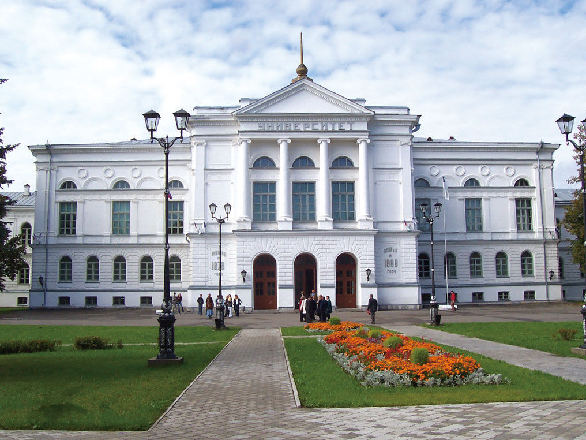

Tomsk State University of Architecture [Introduction]: Tomsk State University of Architecture was established in 1952. Chinese name: Tomsk State University of Architecture English name: Томский государственный архитектурно-строительный университет ...
Tomsk State Architectural University
[Introduction]: Tomsk State Architectural University was established in 1952.

Chinese Name: Tomsk State Architectural University
English Name:Томский государственный архитектурно-строительный университет
Founded:1952
Location: Tomsk Oblast
Category: National
City:Томск
Country: Russia
School Introduction
The university offers 22 majors, including four majors in associate degrees: Cartography, Geographic, Aerial Photography Technology, and Planning; Undergraduate majors include Economic Management, Accounting and Auditing, Urban Land Management, Forestry Machinery and Equipment, Hoisting, Transportation and Road Machinery and Equipment, Automobile and Automotive Industry, Transportation and Service Equipment Management, Logging Technology, Civil Engineering Construction, Urban Construction, Building Product Production and Structure, Heat Dissipation and Ventilation Technology, Sewage Treatment, Mechanization and Automation Construction, Examination and Real Estate Management, Bridge and Tunnel Transportation, Highway and Airport Road Construction, Production Safety Technology, Environmental Engineering, Architecture, Architectural Environmental Design, World Heritage Reconstruction and Restoration, etc. Graduate programs include Local and Enterprise Management, Architectural History Theory, Urban and Regional Planning Theory, Residential Construction and Public Buildings, Building Environmental Design, Project Management, and National Municipal Management.
Specialized Settings
Undergraduate: Engineering, Management, Economics, Literature
Master's Degree: Engineering, Management, History, Vocational Education, and other categories
Specialties: Engineering, Management, Literature
托木斯克国立建筑大学
【导读】：托木斯克国立建筑大学建于1952年。
中文名：托木斯克国立建筑大学
英文名：Томский государственный архитектурно-строительный университет
创办时间：1952年
所属地区：托木斯克州
类 别：国立
城 市：Томск
国 家：俄罗斯
学校简介
大学设有22个专业，其中专科设有制图学、地理测量、空中摄影技术、规划学4个专业;本科设有经济管理学、会计与审计学、城市土地管理、林业机械与设备、起重运输与道路机械设备、汽车与汽车产业、运输和服务器械管理、伐木技术、民用工程建筑、城市建设、建筑产品生产与结构、散热和通风技术、污水处理、机械化与自动化建设、考试和房地产管理、桥梁和隧道的交通、公路与机场公路建设、生产安全技术、环境工程、建筑学、建筑环境设计、世界遗产的重建与修复等专业;研究生设有地方与企业管理、建筑史理论、城市与区域规划理论、住宅建设与公共建筑、建筑环境设计、项目管理、国家市政管理等多个专业。
专业设置
本科：工学、管理学、经济学、文学
硕士：工学、管理学、历史学、职教及其他类别
专科：工学、管理学、文学
English edition. Select 中文原文 to compare with the original Chinese article.
This article is edited and published by Liaoning Overseas Study Service Co., Ltd. The content is for study abroad planning reference only. Unauthorized reproduction is prohibited.
Information on policies, regulations, admissions brochures, and program fees is timely. Please refer to the latest releases from official institutions and institutions in various countries; For detailed verification, please Contact an advisor。